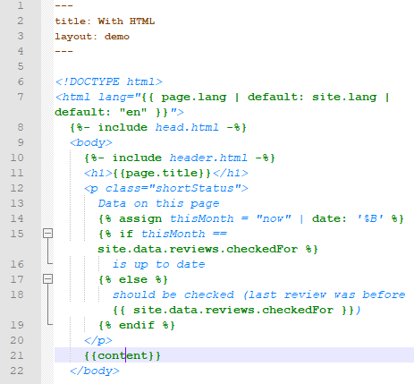
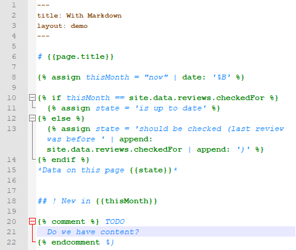

TL;DR Installation Purpose Principal Limitations Shortcomings by Implementation Legal
Highlight and fold Jekyll / Liquid constructs in Notepad++.
Not HTML / Markdown and Jekyll / Liquid, but at least HTML / Markdown or Jekyll / Liquid, i.e. highglight / code fold the Jekyll / Liquid parts of a file instead or alternative to HTML / Markdown parts.
 
If you want to manage anything text-like with rich functionality in a nutshell, there’s no way around Notepad++, it’s even worth buying Windows machines solely for editing with it, otherwise get it via Wine.
If you want to compose anything text-like from building blocks with rich functionality in a nutshell, there’s no way around Jekyll.
Unfortunately there’s no native higlighting or code folding in Notepad++ or any other known editor / IDE for the Liquid templating language used by Jekyll (with additions). This gap is to be filled with the so called “User Defined Language” (UDL) right here.
For (existing) highlighters / code folders for the Jekyll supported data types Markdown, YAML, JSON, CSV, TSV, and of course HTML see elsewhere.
It is not possible to extend Notepad++’ built-in HTML highlighting / codefolding with UDLs due to technical reasons (cf. Stack Overflow), and it is obviously not possible to replace built-in highlighting / code-folding by UDLs since UDLs simply have no option to define HTML tag structures (you may be able to encolor “tags” as keywords but will lose general functionalities with HTML files).
Foldable section markers like “if”, “for”, “comment” etc. will produce also and then totally wrong folding when used literally in text (see Limitations: no real structure with UDLs). As you are here because you want to build from blocks, you may separate text (content) from build information (Jekyll / Liquid instructions) to work around this trap. Or write for in literal contexts instead of ` for (For with big F` at the beginning of sentences etc. poses no problem). Or don’t write too often about things that are “for” and then only “if”. And of course you may run into strange scenarios if your Liquid template is rather complex (but that could be also a useful general hint, of course).
Copyright (C) 2019 Lars Pourlard
This program is free software: you can redistribute it and/or modify it under the terms of the GNU General Public License as published by the Free Software Foundation, either version 3 of the License, or (at your option) any later version.
This program is distributed in the hope that it will be useful, but WITHOUT ANY WARRANTY; without even the implied warranty of MERCHANTABILITY or FITNESS FOR A PARTICULAR PURPOSE. See the GNU General Public License for more details.
You should have received a copy of the GNU General Public License along with this program (file LICENSE). If not, see https://www.gnu.org/licenses/.